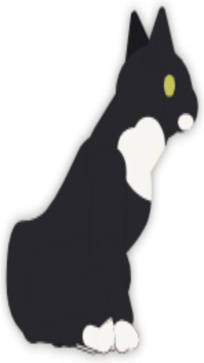
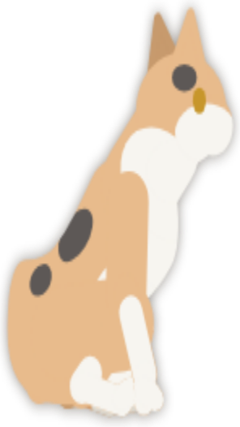

Your cat, on every website
Send a photo of your cat and I'll make a Page Cat with their colors and markings: the white socks, the smudge on the nose, the one dark patch on their back.
Orders open soon$3 for one cat. Usually ready within 3 days.
How it works
- Order and send a photo. A clear picture from the side works best, plus one of the face if they have markings there. Tell me their name.
- I make your cat. I match their coat, patches, stripes and eye color, and check them sitting, walking and napping.
- You get a cat code. Open Page Cat from the toolbar, paste the code under Your cats, and press Import. Your cat moves in right away.
Prices
Made from real cats


Questions
What do I need to install?
Just Page Cat from the Chrome Web Store. Your cat comes as a code you paste into it, so there's nothing else to download.
Will my cat be on my other computers?
Yes, if you're signed in to Chrome with sync on. Your cats are saved to your Google account along with your other Page Cat settings.
Can I change their name or size later?
Yes. Rename them in the Page Cat menu, and set their size and chonkiness with the sliders. Each of your cats remembers its own.
What if it doesn't look like my cat?
Tell me what's off and I'll fix it. One round of changes is included. If I can't get it right, you get your money back.
What happens to my photos?
I only use them to make your cat, and I delete them once you have your code. Page Cat itself never sees them and doesn't collect any data.
Can I share my code?
Sure. Anyone who pastes it gets your cat.